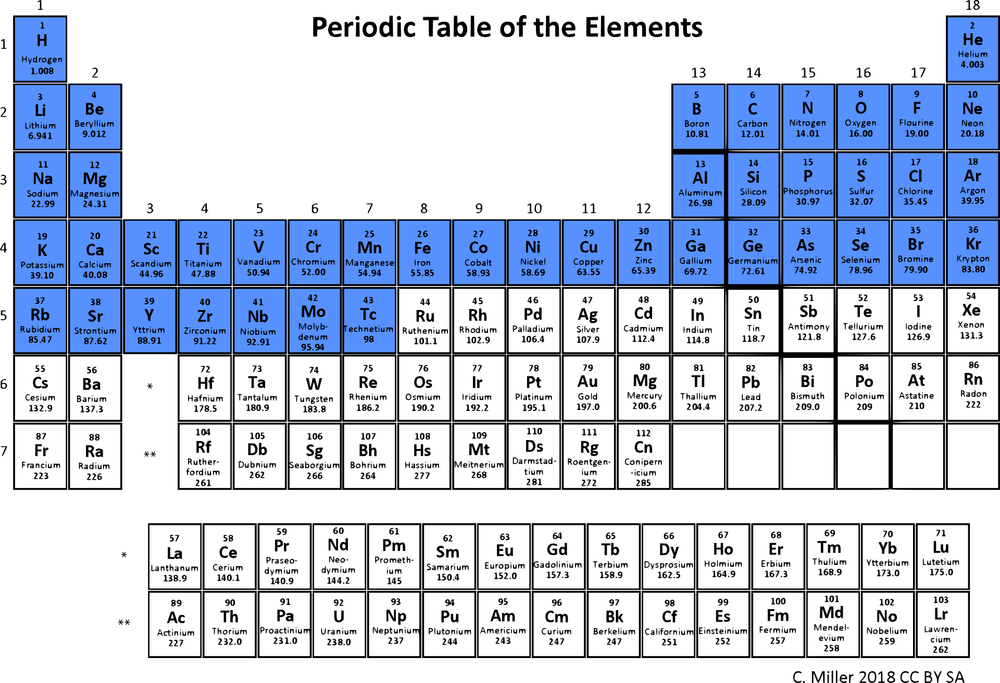
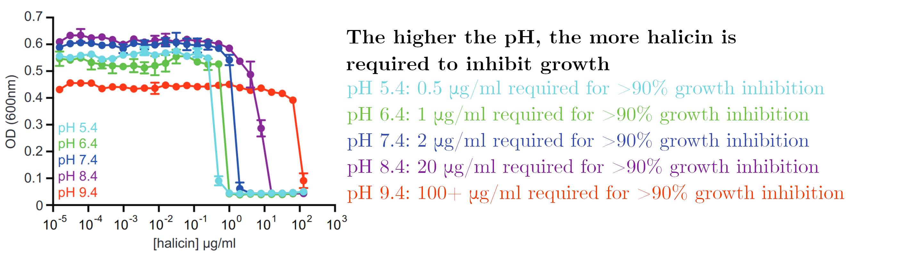
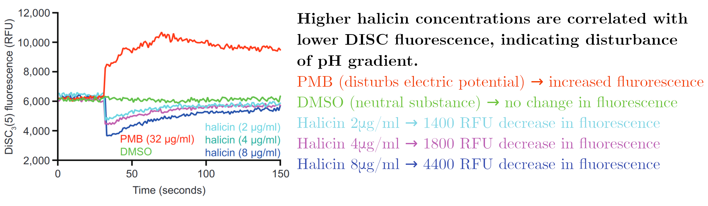
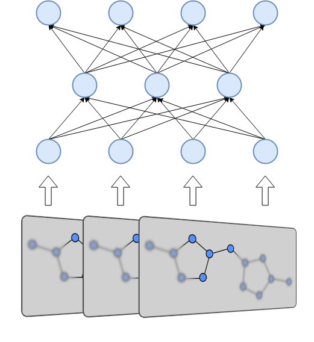

- Introduction
- Graph Neural Networks
- Molecules as graphs
- Message Passing Neural Networks
- Message Passing Phase
- Readout Phase
- ChemProp
- Atom and bond features
- Hyperparameter optimization
- Stokes et al. Methodology
- Chemprop use
- Architecture
- Dataset
- Active Learning
- Mechanism of action
- Chemprop use
- Conclusion
Introduction
The space of molecules wherein antibiotics may occur is large and becoming larger. Many antibiotic discovery programs choose to look inside large existing chemical libraries to find new leads. These chemical libraries are limited in several ways, as they do not sufficiently cover the chemical space and are prohibitively expensive to curate and expand. According to Stokes et al: “Since the implementation of high-throughput screening in the 1980s, no new clinical antibiotics have been discovered using this method.” Most ‘new’ finds turn out to be structurally very similar to older antibiotics, which reduces their potential for effectiveness.
The authors note that machine learning has advanced to the point where it may present an alternative to this approach of finding antibiotics. In 2016, researchers already reported generating representations of molecules from a chemical compound space using deep learning (Gomez-Bombarelli et al). The innovation of deep learning primarily lies in its ability to describe the chemicals itself, instead of relying on manually designed annotations. This should aid in their ability to predict chemical properties of molecules.
In short, the prediction procedure was as follows:
- A deep graph-based neural network was trained to predict growth inhibition of E. coli with a dataset of 2335 molecules. These were derived from an FDA approved drug library and library of natural products isolated from plant, animal and microbial sources.
- This model was used to predict the E. coli growth inhibiting properties on the Drug Repurposing Hub library, containing 6111 different molecules. The top 99 and bottom 63 molecules were empirically tested. The model scores 51% true positive rate and 97% true negative rate. Halicin was one of the true positives, and given its other properties was deemed viable for further testing.
- The results of the previous test were inserted into the library and the model was retrained.
- The model was then used to predict E. coli growth inhibiting properties on a subset of the ZINC15 chemical library containing over 170 million molecules.
The neural network used is a message passing network called chemprop. It is publically available on GitHub: https://github.com/chemprop/chemprop and development has been ongoing since at least June 12th 2018. Shared second authors Kevin Yang and Kyle Swanson (order as shown in the author listing for the paper) published this network in JCIM in 2019 (Yang et al). The fork network on GitHub shows that several others have already been working with this neural network for other purposes, like property prediction of 2-molecule mixtures by Allison Tam at MIT. We can expect more results based on this model later this month (https://www.aidm.mit.edu/posters1).
Graph Neural Networks
Molecules as Graphs
Molecules are groups of atoms held together by chemical bonds. In chemistry molecules are often illustrated by connecting the letters representing the atoms with lines. Take for example, Halicin (less popularly known as: 5-[(5-Nitro-1,3-thiazol-2-yl)sulfanyl]-1,3,4-thiadiazol-2-amine).

Halicin’s structure prominently features two rings. These rings consist of
Sulfur (S) atoms and one or two Nitrogen (N) atoms. In addition, by convention
Carbon (C) atoms are omitted in these drawings. They are placed where lines meet
and no letters are present.
Because all the atoms in a molecule are by definition (directly or indirectly)
contiguous, it is easy to see how they could be converted into a graph. Atoms
become nodes and the chemical bonds between them become vertices.

In a graph we can assign properties to nodes, in this case we can annotate each note by which atom is present at each location.

Some atoms are connected by double (or in the case of other molecules, even triple bonds). The vertices can be annotated to reflect this so that the network is aware of this.

The illustration here is still simplified, as hydrogen atoms are generally also omitted or combined with other atoms as groups in this visualization. Adding these would yield a more complex graph but equally valid graph.
Message Passing Neural Networks
Message Passing Neural Networks (MPNNs) take advantage of the ability of molecules to be represented as graphs in order to compute compute meaningful representations of them. Molecules vary in size and in the number of nodes and edges they have, which makes it difficult for neural networks to perform operations with them. Using MPNNs we can compute a fixed size representation, which is easier for a neural network to ingest. MPNNs are also differentiable, which means that they can be incorporated into the network architecture. This allows the MPNN to be trained and finetuned to produce representations for a specific purpose.
The MPNN computes its representation in two phases: A message passing phase and a readout phase. The former allows the network to iteratively build up properties of the molecule over set amount steps. The latter combines these properties into a fixed size vector that represents the molecule as a whole.
Message Passing Phase
During the Message Passing Phase, each node and vertex in the graph has a hidden state associated with it. This hidden state includes properties like the type of atom or bond the node or vertex represents. These hidden states are updated during t timesteps. For every timestep the following operations occur:
- First, for every node the message function is computed. This function takes in the hidden state of said node, the hidden state of a neighbour node and the hidden state of the vertex between them. The function must be differentiable. The output is called the message.
- This is repeated for every neighbour node of the source node. The messages are all summed to produce a single message vector.
- This message vector is run through an update function. This is again a differentiable function. It should output a vector that is the same size as the hidden state for the node. In the original paper this update function is a recurrent neural network.
- When new vectors have been computed for every node, the hidden states for the nodes are set to those vectors. The message and update functions can even be computed in parallel.
- This entire process is then repeated with the new hidden states for t iterations.
The same message passing and update functions are used for every node and during every time step. This allows for faster computation and the ability to use larger hidden states. The message and update functions are usually some kind of neural network.
The hidden states are only updated after computing messages for all the nodes. This allows this phase to be invariant to the order in which the nodes are processed and robust in the face of parallel execution.
Readout Phase
The readout phase of the MPNN takes place after the full message passing phase completes. The hidden states of all the nodes are passed into a readout function. If the readout function is invariant to the order of nodes, for example a simple sum operation, the full MPNN will also be invariant to the order of nodes. The result of the readout phase is the representation of the molecule. This representation can either be used as a fingerprint, or it can be a distribution or a scalar value that can be optimized for some target. The entire MPNN can be trained end-to-end on the property of a chemical. The representation can also be followed by a feed forward neural network.
ChemProp
Chemprop is a Message Passing Neural Network, it builds upon the structure of the MPNN from 2017, but introduces several changes that increase its performance.
- ChemProp calculates the messages over each vector instead of over each node.
- In addition to annotations of type for each atom and chemical bond, ChemProp’s best models include molecule level annotations from RDKit. These features help describe the molecule by imparting expert knowledge onto the graph.
- ChemProp uses summation as an update function instead of a Gated Recurrent Unit.
- ChemProp adds Dropout after each message passing step, presumably to improve generalization.
Atom and bond features
The following features are used to annotate each atom:
|
Feature |
Description |
Dimensionality |
|
Type of atom |
The type of atom, for example C, O or N, ordered by atomic number |
One hot encoded, 100d |
|
Number of bonds |
Number of bonds the atom is involved in, represented as a 6 bit (0-63) integer. |
Integer,, 6d |
|
Formal charge |
The electronic charge assigned to an atom, represented as a 5 bit (0-31) integer. |
Integer, 5d |
|
Chirality |
A molecule level feature indicating how this molecule can be superimposed on its mirror image. |
One hot encoded, 4d |
|
Number of bonded hydrogen atoms |
In addition to Hydrogen atoms being modelled as nodes, this feature adds the number of bonded hydrogen atoms to a molecule as an integer. |
Integer,, 5d |
|
Hybridization |
Hybridization state, this tells the network about the number of electrons surrounding the atom. |
One hot encoded, 5d |
|
Aromaticity |
Whether or not the atom is a part of an aromatic ring. |
Boolean, 1d |
|
Atomic mass |
Mass of the atom divided by 100. This ranges from 0.01008 to (theoretically) 2.94 |
Float, 1d |
Of note is that many features which could be given as a (normalized) number are represented as one-hot encoded integers. This may aid the network in interpretation of these discrete numbers. Only the atomic mass is represented as a float. It is divided by 100 which means that a large part of the periodic table will have a value between 0 and 1, including a majority of the organic atoms (Figure X). In addition, 200 molecular features are computed in silico by RDKit and added to this feature list. Features are normalized to mean 0 and standard deviation 1 before being fed into the network.
 |
|
Figure X: Periodic table of the elements with atomic masses below 1 labelled in blue. Original image by C. Miller, CC BY-SA. |
The following features are added to each bond/vertex:
|
Feature |
Description |
Dimensionality |
|
Type of bond |
The type of bond, single, double, triple, or aromatic. |
One hot encoded, 4d |
|
Conjugated bond |
Whether or not the bond is conjugated |
Boolean, 1d |
|
In ring |
Whether or not the bond is in a ring. |
Boolean, 1d |
|
Stereo |
The type of stereoisomerism of this bond. |
One hot encoded, 6d |
Hyperparameter optimization
Out of the box ChemProp supports hyperparameter optimization. The authors use Bayesian Optimization to tune a number of aspects of the model. The following hyperparameters are tunable by default.
- Model depth, or the number of timesteps used during message passing. A larger number of steps means that atom and bond states are propagated over a longer distance. Information from one side of the molecule takes time to traverse to the other side.
- Hidden size of the bonds vectors.
- Number of feed forward layers in the feed forward network that follows the MPNN.
- Dropout in the MPNN.
Stokes et al Methodology
ChemProp Use
Stokes et al recognize the need for in silico methods of determining molecule properties. Being able to predict how a molecule is going to behave under specific circumstances without having to run an experiment speeds up research and lowers research costs. The authors train ChemProp to predict the effect of molecules on the growth of E. coli, a model organism used in the study of bacteria. The neural network is initially trained in 2335 molecules with annotations.
Architecture
ChemProp is basically used as is, with the following hyperparameters:
- Message passing steps: 6
- Neural Network hidden size: 2200
- Number of feed-forward layers: 3
- Dropout probability: 0.15
These hyperparameters were found using the built-in hyperopt system.
Dataset
Stokes et al initially measured the growth inhibition effects of 2335 different molecules. The molecules were selected from different resources to ensure diversity. For the purposes of training the growth inhibition was binarized, with a cut off value of 80% inhibition. This led to 120 ‘hits’ or molecules with a significant growth inhibiting effect.
Of note with regards to this dataset are two salient points:
- The dataset is small. Image recognition algorithms are trained on hundreds of thousands of images. This dataset is orders of magnitudes smaller.
- The dataset is unbalanced. Only 5% of the samples constitute hits. An imbalance in the dataset makes it more difficult to train a deep learning network.
Yang et al note in the ChemProp paper that their model underperforms on severely imbalanced datasets (a dataset with 0.2% hits is given as an example). Either the authors found a way to mitigate this, or this particular dataset was balanced enough so as not to cause stability problems.
An ensemble of 20 models was used to improve performance.
Active Learning/Human in the loop learning
ChemProp was trained on 2335 molecules in the first phase of this project. In the second phase the authors predicted the growth inhibiting properties of 6111 molecules and used the results to build a new dataset. These molecules were derived from the Drug Repurposing Hub, which contains drug molecules at various stages of testing. The 99 top performing and 63 lowest performing molecules were selected from this group and assessed for E. coli growth inhibition. These molecules were experimentally tested for growth inhibition and the resulting data were fed back into the model. This constitutes a form of human in the loop learning, where a human sits in the training loop for a machine learning model. These steps could be repeated indefinitely with, presumably better performance on each iteration. Strictly speaking it is not a form of active learning, as the algorithm is not able to actively query a human itself.
Halicin mechanism of action
The authors note that because halicin retained its growth inhibiting activity even in E. coli and M. tuberculosis colonies that were mutated to be antibiotic resistant, its mechanism of action must be unconventional. In an effort to discover the way in which the molecule inhibits growth the authors attempted to evolve E. coli mutants that were halicin resistant. They were unable to find a resistant mutant in two different trials.
RNA sequencing was used as an alternative method to discover the mechanism of action. It was found that when bacteria were exposed to less-than-lethal concentrations of halicin genes that are related to motility (movement) were expressed less frequently. Genes that preserve the balance of iron concentration in the cell were expressed more frequently. This led the authors to believe that halicin affected the ability of the cell to maintain a difference in electrochemical charge between the inside and the outside of the cell. This gradient is integral to the ability of a bacterium to move around. Its disturbance can either be caused by a means of altering the difference in electric potential (Δψ) or the difference in pH.
In order to test this hypothesis, halicin effectivity was tested in higher pH environments. The electrochemical gradient is retained in part by a difference in pH between the inside and the outside of the cell. As pH increased, halicin became less effective. This points to halicins mechanism of action involving the ability of bacteria to maintain a difference in pH.

A final test was performed where bacteria were exposed to a fluorescent molecule (DISC) that becomes less fluorescent in higher concentrations. When the electric potential difference is disturbed, DISC is released into the environment, resulting in higher fluorescence. When the difference in pH is disturbed, the uptake of DISC is increased which results in lower fluorescence.

Discussion
In this section I humbly submit some thoughts on the ChemProp network. Note that I have not worked on or with the network, this is just “thinking aloud” as it were. I invite anyone to comment on these and correct me where I’m wrong.
Dataset imbalance
The dataset used by Stokes et al is small and unbalanced. Using techniques like class weighting or bootstrapping can help in rebalancing the dataset, which could lead to better performance.
Pretraining Chemprop
In Natural Language Processing we find that increases in the state of the art performance have come from pre-training large neural nets in self-supervised settings. That is: models are given part of an input and expected to fill in the blanks. This requires no labeling and allows the model to get the structure of the training language imparted upon it before being exposed to a task-specific dataset. ChemProp might benefit from a pre-training step, where it could predict parts of a molecule that are masked out from the graph. The number of molecules for which a structure is available is vast, requiring no labeling. This might aid the model in creating an internal representation of the existing molecule space, which could speed up training and/or improve performance and generalizability.
Attention mechanisms
Attention is a concept in deep learning that has also become more prevalent since the introduction of Transformers to the Natural Language Processing field. Simply put, attention mechanisms allow a neural network to selectively pay attention to parts or regions of the input. Given the benefits it has had for NLP, introducing attention to ChemProp may also yield increased performance.

Conclusion
Jonathan Stokes, Keving Yang, Kyle Swanson and the other authors of the “A Deep Learning Approach to Antibiotic Discovery” and “Analyzing Learned Molecular Representations for Property Prediction” papers made an important contribution to the scientific intersection of machine learning and biology. Collaboration that applies innovations in deep learning to biology and healthcare will be an important source of new discoveries in the field and improvements of life in the coming decade.
It remains to be seen if halicin or any of the other compounds that were designated as leads by the model will pass the required clinical trials, but given that the molecules are derived from a source of existing drugs their chances are substantial. I certainly hope that these new drugs can advance quickly and aid humanity in its fight against antibiotic resistant bacteria.
References:
Stokes et al. https://www.cell.com/cell/fulltext/S0092-8674(20)30102-1
Gomez Bombarelli et al. https://arxiv.org/abs/1610.02415
Yang et al. https://www.ncbi.nlm.nih.gov/pubmed/31361484
Implementation of MPNN: https://github.com/deepchem/deepchem/blob/master/deepchem/models/tensorgraph/graph_layers.py#L384